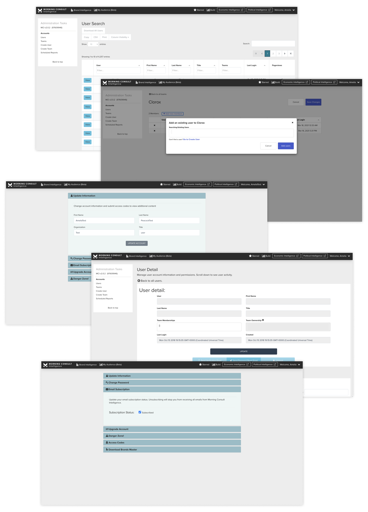

Account management system overhaul & content sharing product design
I redesigned the legacy SAAS account management experience to enable in-app sharing, reduce contract servicing costs, and empower client services to independently manage their accounts.
TLDR: Users were spending hours creating visualizations with our tools, but couldn't share them with their team members for collaboration, or review. In order to satisfy user needs, the entire account management system needed to be overhauled to enable self-service and data partitioning.
- Role: Lead Product Designer
- Software Used: Figma, UserTesting, Amplitude, Miro, Jira
- Shipped product
User Problems
Morning Consult clients purchase the platform in order to visualize their real-time polling data. Through discovery interviews with the platform's power users, we uncovered a variety of user problems to focus on while creating OKRs and roadmaps.
A majority of clients have 2-10 users per account that are all working on similar projects. They want to be able to work together to generate visualizations within the same dashboard. However, visualizations are inaccessible to anyone other than the content owner.
Morning Consult client success (CS) representatives want to be able to create visualizations for clients and deliver them as a part of their contract. However, because content is locked to individual accounts, they are forced to log into their client's personal accounts and create dashboards there. This presents a variety of security issues.
CS representatives are in charge of toggling data access within the platform for client accounts. This process is confusing and located in an inaccessible part of the platform. This slows down the account management process and increases the risk of misassigning client data.
As users get more familiar with the platform and start incorporating it into more and more of their workflows, they want to be able to add new team members to the platform. However, in order to do that, they have to reach out to their CS representative. This slows down adoption and introduces unnecessary barriers to entry.
Basic functionality (reset password, change email, invite users, assign data access, etc.) is notoriously confusing and the source of dozens of IT support tickets. The cost of servicing basic contracts suffers because of how frequently the process needs developers to help debug.

Stakeholder research
After documenting user problems, I partnered with my product manager to gather stakeholder input to better understand solution design scope. I interviewed developers, business leaders, and product leaders to create a short, medium, and long term vision for the product.
In these interviews I ran through a summary of user feedback and the hypotheses we'd developed for solving these problems. I focused on the most impactful user problem: users wanted to work together within the visualization tool, but were unable to do so easily, or securely. The stakeholder research revealed a number of technical blockers to creating a sharing solution:
1
Developing improvements to the account system was painful
The authentication model was built using outdated technology that made introducing new features miserable for the development teams
2
The platform's accounts and content were not connected to client teams
Many accounts existed for each client contract, but the data model had no knowledge that these accounts were connected to one another
3
Users created data visualizations for more than one client team
Internal users were servicing 8-10 client accounts at any given time, and it would be a legal issue to share content with the wrong client
I found that users were commonly sharing login information in order to have access to the same content. One of the product team's driving business goals is to increase the number of active users. Uncovering this sharing-work-around was a big motivator to rework the data model to enable cross-team collaboration, and to, hopefully, encourage client teams to onboard new users.
This stakeholder research illuminated just how many systems would need to be updated to enable a sharing feature. The work was broken up between two scrum teams: one team would focus on rebuilding the authentication model to create a systematized approach to the content-user-team relationship, and one team would focus on building the content sharing MVP.
Because this work spanned two scrum teams, the order in which designs were needed was a high priority for me and my product manager. It was our goal to reduce (as much as possible) the cross-team blockers and to keep the release schedule iterative and consistent.
User flow & wireframes
The sharing MVP required a technical migration which presented an opportunity to overhaul the accounts management UI. After creating an end-to-end user flow from account creation, to visualization sharing, I created wireframes that updated the old UI to the new design system components.
Technical migrations take time and focus to be done effectively. In previous migrations, it has meant a near halt to feature releases. In this project, we were keen to pair the backend improvements with frontend improvements to maintain continuous delivery of user value. This meant a complete redesign of the accounts management UI, both to the information architecture, and to the user interactions.

I learned from prior user research that many basic functions within the accounts management system caused user confusion and frustration. Something as simple as changing an account's email had resulted in dozens of IT support tickets in the year prior. As I redesigned these pages, I prioritized streamlining these common jobs-to-be-done to reduce friction and add clarity.
I regularly sought feedback from my development teams and business stakeholders. What I learned was:
Users need to be able to switch between teams at the site level (rather than at the account management level)
There are three main user groups: account executives, client success representatives, and external users
Some account management features shouldn't be accessible to all external users
Internal users should not be able to see the personal information of users they don't directly manage
Users need to be able to switch visualizations settings between private and shared
Shared visualizations can be accessed by everyone on the client team (all or nothing)
The solution
The MVP solution redesigned the existing accounts pages, introduced the most requested accounts features, reconfigured the database to recognize different client teams, added a toggle to switch between teams, and allowed visualizations to be shared via link within teams.
1
Team Toggle
The toggle allows users to be assigned to multiple teams, and to switch their product view to match their active team. All user-created content is also assigned at the team-level.
This feature allows content to be visible by multiple users, while still maintaining privacy: user-created content can't be shared outside of teams. This feature also greatly helped reduce clutter and organize internal users' accounts.
2
Team Configuration
The new account management product allows users to quickly configure team settings like adding users, enabling data access, assigning points of contact, and more.
The updated system is now visible to both internal and external users. This allows external users to do more self-service account management. Additionally there are more security guardrails in place to prevent internal users from accessing data they shouldn't be able to see.
3
Link Share
Users can share a view-only version of their data visualizations with members of their team. At any point they can revoke team-access to their content. As a visualization is updated, so is the view-only version.
Team members can make a copy of a shared dashboard to apply their own updates. While the product does not support multi-user editing right now, the share link was a massive step in the right direction.
Prototyping & usability test
After iterating on the final designs with stakeholders, I ran an unmoderated usability test with 10 users to validate my design decisions and uncover any areas of improvement.

I ran this test using a prototype I developed in Figma in an effort to uncover any major usability issues before we began development. After compiling test results, I presented the findings to my team, and implemented a number of UI updates to the mockups. This process helped ensure that when development began, we could move quickly and confidently.
Because the redesign involved moving many features to new areas of the product, I was particularly interested in testing how quickly/easily users could navigate the new information architecture.
Navigational elements (side bar, top tabs) were easy to find and use
The flow to add a new user to a team was too similar to the flow to add an existing user to a team
Assigning data access to teams was much easier in the new design
The organization of internal users versus external users was not as clear as it could be
Pilot release
Because the new account management designs would affect the day-to-day lives of 200+ users, we rolled out the product to a handful of pilot users before moving onto a wider release. This gave us an opportunity to fix any bugs and to refine our release documentation to best communicate these changes.

Overwhelmingly positive feedback on the separated team spaces
Client services representatives were very excited to have dedicated spaces in which to work for each client. The team toggle functioned like a giant filter so that they could focus on one client project at a time.
Uncovered some small bugs and areas for UI enhancement
The pilot users found a couple of incidental bugs that we were able to fix before a wider release. There were also a number of low-lift visual enhancements suggested that we prioritized as fast-follows.
Link sharing works well but should be expanded to encourage collaboration
Link sharing is a great way for account executives to send prospective clients examples of our product offering, but without co-editing functionality, our power users are not able to work as collaboratively as they want.
Key Learnings & Next Steps
The new accounts management tool, team toggle, and sharing MVP have launched to a positive reception. The renewed focus on building collaborative tools helped save a high-profile client contract.

Coordinating two scrum teams for 8 months was a great learning experience in project management, deadlines, and designing in an iterative, non-blocking way. Having a clear vision of the final experience and a path to get there was vital to success.
Next steps include:
1
Introduce a hierarchy of user roles to the accounts management system to provide users with varied levels of features
2
Expand sharing to enable multi-user editing and commenting to encourage broader collaboration within the platform
3
Create a notification system to alert users when changes have been made to their content or team accounts
Next Case Study 
Design System for Capterra
Proprietary Survey Builder
Developed with Love by Amelia Peacock 2022